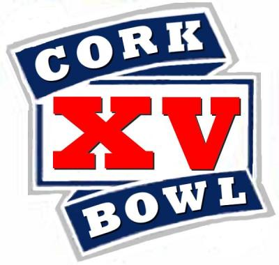

View the Player Profiles of Cork Bowl Greats Cork Bowl 14 DVDs Now On Sale for $3 (Plus S&H)E-mail the Commissioner at patrickcork23@yahoo.com to order your copy. Cork Bowl 14Cork Bowl 14 StatsCork Bowl 14 Preview Cork Bowl 13Cork Bowl 13 StatsCork Bowl 13 Preview Cork Bowl 12Cork Bowl 12 StatsCork Bowl 12 Preview Cork Bowl 11 Cork Bowl 11 StatsCork Bowl 11 Preview Click Here for The "Scoop's" Take on Cork Bowl XI Click Here for Cork Bowl 10Cork Bowl 9Cork Bowl 8Scoring summary and stats for Cork Bowl 8Cork Bowl 7 statsCork Bowl 6 stats Cork Bowl 5 stats Cork Bowl 4 statsCork Bowl 2 stats Career Cork Bowl stats from 1992, 1994-2005 (**updated 12-10-05) Chair baseball info
Cork Bowl 14 DVDs Now On Sale for $3 (Plus S&H)E-mail the Commissioner at patrickcork23@yahoo.com to order your copy.
Cork Bowl 14Cork Bowl 14 StatsCork Bowl 14 Preview
Cork Bowl 13Cork Bowl 13 StatsCork Bowl 13 Preview
Cork Bowl 12Cork Bowl 12 StatsCork Bowl 12 Preview
Cork Bowl 11 Cork Bowl 11 StatsCork Bowl 11 Preview
Click Here for The "Scoop's" Take on Cork Bowl XI
Click Here for Cork Bowl 10Cork Bowl 9Cork Bowl 8Scoring summary and stats for Cork Bowl 8Cork Bowl 7 statsCork Bowl 6 stats Cork Bowl 5 stats Cork Bowl 4 statsCork Bowl 2 stats
Career Cork Bowl stats from 1992, 1994-2005 (**updated 12-10-05)
Chair baseball info